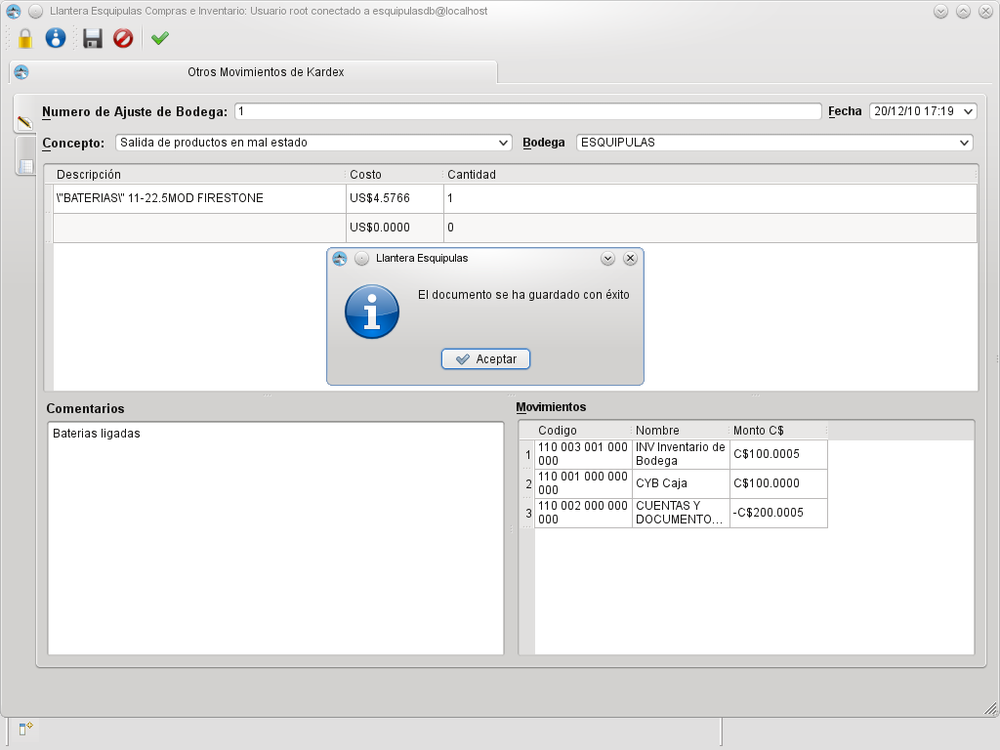

MIS Esquipulas Inventario: Kardex por otro conceptos
Este documento permite dar entrada o salida a productos del inventario por cualquier concepto creado previamente
desde el modulo de administración web.
La entrada se determina escribiendo la cantidad de unidades en positivo y la salida en negativo, en este ejemplo se puede
observar que se esta dando salida a un producto en mal estado.Este documento debe ser creado por la persona autorizada en casos comunes el contador quien es el que tiene
la autoridad de determinar los movimientos de inventario.
Una vez creado cuando la mercaderia fisicamente entre a bodega
el responsable de bodega debe ingresar el documento para actualizar la existencia fisica, este proceso se realiza
mediante el boton
 Kardex de salida